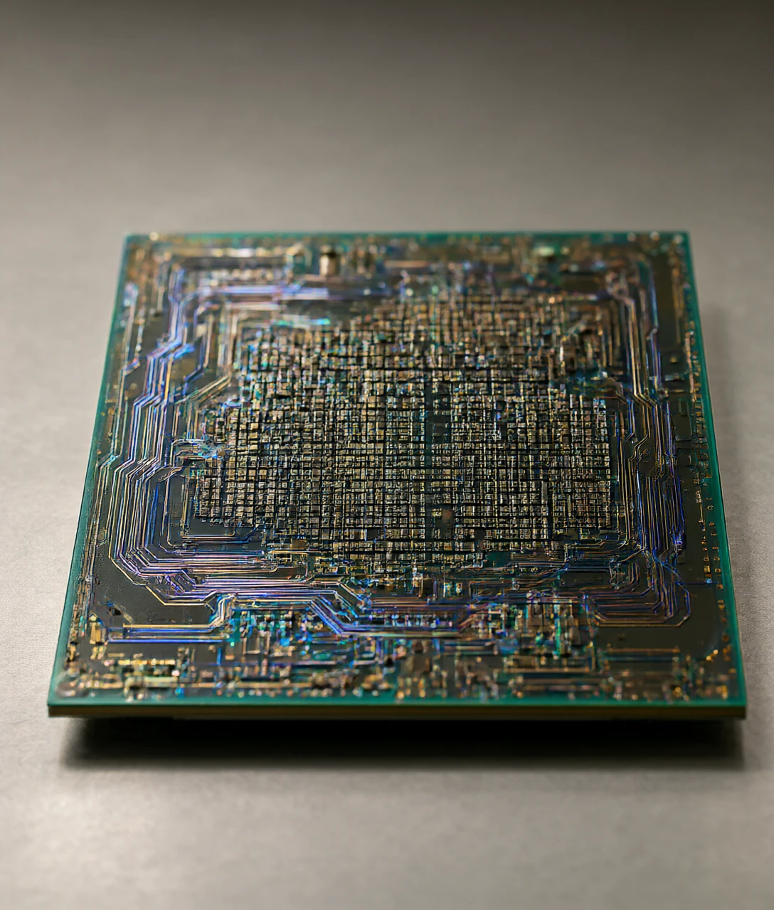

一套 12 世纪印度账房就在用的写法，为什么能一路活到今天的作业本上
乘法最开始的意思，是重复相加。
23×4，就是 4 个 23 加起来。
写成 23+23+23+23，小学二年级就能算。乘数一大就麻烦了。
23×999，要加 999 次。就算每秒写一步，也要写 16 分钟以上。
换算一下：一节课过去了，还没算完。中间错一位，全废。
所以人类很早就换了办法：拆开，分别算，再合起来。
打个比方：要搬 23 块砖，一趟搬不动，就分两堆搬。总数不变。
拆的依据是十进制。十进制就是满十进一位的记数法。
23 本来就不是一整块。它是 2 个十，加 3 个一。
既然它本来就是拼起来的，拆开算当然不会改变结果。
这一步有个正式名字：乘法对加法的分配律。
分配律就是：一个数乘一堆数的和，等于分别乘，再相加。
它不用背，画个方块就能看见。
画一个长 23 格、宽 4 格的方块。从第 20 格竖着切一刀。
变成 20×4 和 3×4 两块。面积一点没少。
那问题来了：既然可以拆，竖式为什么偏偏从个位开始乘？
合法性来自位值制。位值制就是：数字写在哪一位，就代表它乘过多少个 10。
23 里的 2 站在十位，值是 2×10。3 站在个位，值是 3×1。
这不是约定俗成的习惯，而是这套记数法的定义本身。
有人会问：那拆成 10 和 13 行不行？
完全行。(10+13)×4，等于 40 加 52，还是 92。
拆法有无数种。按位拆只是其中一种。
它被选中，不是因为更正确，而是因为更好重复。
个位怎么算，十位照抄同样的动作，不用临场判断。
规则统一，才能写成固定步骤，才能印进教材，也才能翻译成电路。
这里还有一条边界：按位拆只在十进制里这么顺。
古巴比伦人用六十进制。他们错一位，等于乘 60。
计算机用二进制。错一位，等于乘 2。
位置代表多少，取决于这套记数法的底数。这不是宇宙常数。
换个底数，好比换一套积木。积木变了，拼法就得跟着变。
那底数一换，这套写法还成立吗？
算 32×23，第二行写的是 32×2=64。但整行往左错一格。
因为那个 2 站在十位。它代表的不是 2，是 20。
32×20，等于 640。末尾那个 0 被省掉了，位置替你记住了它。
这是个简化说法：那一行真实的值是 640。省 0 只是写着方便。
竖式最容易被当成死记硬背的地方，就在这里。
位置本身就是数值的一部分。
把 5 从个位移到十位，值从 5 变成 50，涨了 10 倍。移到百位就是 500。
好比把 5 块钱从口袋移到钱包，数目没变，但它在哪一层很重要。
竖式利用的正是这条性质。每一行的部分积，自己站到对的量级上。
最后只剩对齐相加。
反过来验算也对得上。
如果第二行直接写在个位，等于把 640 当成 64 加进去。
结果会少 576。相当于答案的八成，凭空没了。
这不是粗心，是量级搞错了。
错位规则存在的唯一目的，就是防止这种量级错乱。
那如果某一行的量级真的错了，从结果上能看出来吗？
3×4，等于 12。个位写 2，那个 1 被送进了十位。
这一步常被当成咒语背下来。其实它就是换零钱。
好比手里有 12 枚一元硬币，付款时不会一枚一枚数。你会换成 1 张十元，加 2 枚。
个位这个盒子，容量只有 10。装到第 10 个就溢出，必须打包成一个「十」送上去。
所以进位不是新规则。它和位值制，是同一件事的两面。
竖式里把那笔进位数写成小字，只是提醒别丢包裹。运算本身不靠这个记号。
这条规则有代价。盒子容量固定，就有上限。
一个 8 位的二进制寄存器，最多表示 255。相当于 255 个格子，塞满就再装不下。
再加 1，它就归零。这叫溢出。
1997 年，阿丽亚娜 5 号火箭首飞 37 秒后解体。直接原因之一，就是这个。
惯性导航把 64 位浮点数转成 16 位整数时，超了范围。浮点数就是带小数点的数。
位值制的整齐，是用「有边界」换来的。
统计上，这类溢出至今仍是嵌入式设备最常见的软件缺陷来源之一。
那盒子只有 10 格这件事，对更大的数意味着什么？
计算机只认 0 和 1。二进制的盒子容量是 2，满 2 进一。
最朴素的硬件乘法，叫移位相加。
把乘数一位一位看过去：是 1，就把被乘数左移几位加进来；是 0，就跳过。
骨架和你的竖式完全一致：拆开、分别算、按位置对齐相加。
但要说清楚一件事：今天的处理器，基本不再这样一位一位地串行加。
主流做法是把部分积两两归并成一棵树，或者一次处理多位。
竖式在这里的身份，是「人能写下来的版本」，不是硬件的实现方式。
好比同一道菜，家里做和后厨做，步骤完全不一样。把两者画等号，是一种简化说法。
还有一个仍在推进的方向：两个 n 位数相乘，理论上最快能多快。
2019 年，Harvey 和 van der Hoeven 发表了一篇论文。
论文给出了 O(n log n) 的整数乘法算法。
1971 年有一个算法，叫 Schönhage–Strassen。它已经很快了。
2019 年这篇，把剩下的那个 log 因子也去掉了。这类算法的研究还在继续。
但这类算法要大到几十万位，才真正占优势。
你作业本上的两位乘两位，用它反而更慢。算法的优劣，永远带条件。
至于哪一类算法在真实芯片上更划算，工程界至今尚无定论。只能按位数和使用场景分别测。
